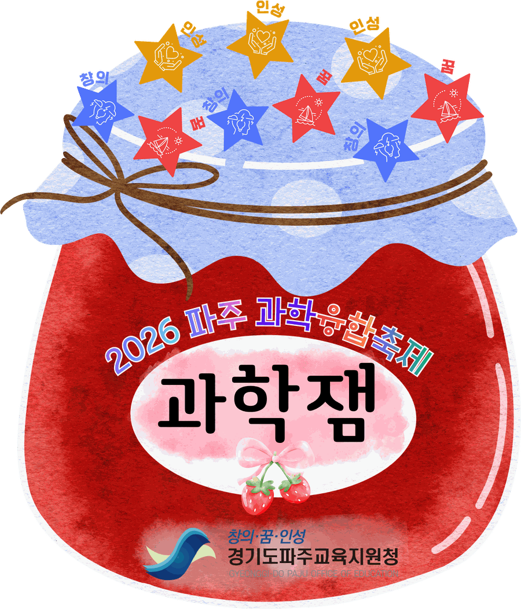
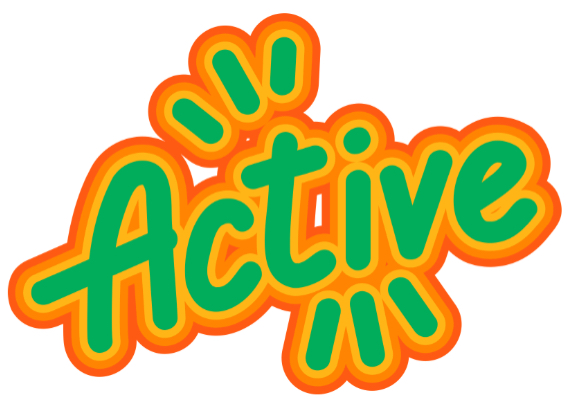
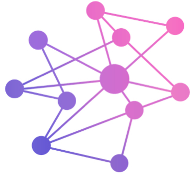

Joyful · 즐거움이 피어나다
체험과 탐구 속에서 학생들의 호기심과 상상이 자연스럽게 확장되고, 배움의 즐거움이 살아나는 공간
경기도파주교육지원청 · 2026 파주 과학·융합축제
학생이 직접 기획하고 운영하는 체험부스 약 80개.
하루 동안 운정호수공원이 통째로 실험실이 됩니다.
※ 장소·세부 일정은 사정에 따라 변경될 수 있습니다.

About
잼(JAM)은 즐거움과 배움이 켜켜이 쌓이는 단지이자, 서로 다른 소리가 어울리는 잼 세션(Jam Session)입니다.
체험과 탐구 속에서 학생들의 호기심과 상상이 자연스럽게 확장되고, 배움의 즐거움이 살아나는 공간

학생과 지역사회가 함께 만들어가는 역동적인 과학·융합 페스티벌

과학·수학·환경·AI가 어우러지는 창의적 배움과 상상의 축제
학생이 직접 기획·운영하는 체험부스를 중심으로 탐구와 체험이 살아있는 개방형 과학축제입니다.
Zone
분야별로 나뉜 존을 따라 걸으면 하루가 자연스럽게 하나의 탐구 코스가 됩니다.
개막식·축하공연·과학 마술쇼를 함께 즐기는 참여형 무대
물리·화학·생명·지구과학 중심의 탐구·실험 체험
원리 발견과 문제해결을 경험하는 수학 체험
생태환경·자원순환·탄소중립 실천 프로그램
AI·로봇·코딩·디지털 메이킹 기반 미래기술 체험
존별 배치도는 준비되는 대로 이곳에 올라갑니다.
준비 중Timetable
무대 행사는 사전 예약제로, 체험부스는 타임별 예약과 현장 참여를 함께 운영합니다.
| 시간 | 무대 행사 콘서트홀 | 체험부스 야외 |
|---|---|---|
| 08:30 ~ 09:50 | 행사 운영 준비 | 부스 운영 준비 1타임 예약 09:50~10:00 |
| 10:00 ~ 11:00 | 개막식 & 축하공연 10:30~11:00 · 사전 예약 | 부스 운영 2타임 예약 10:50~11:00 |
| 11:00 ~ 12:00 | — | 부스 운영 |
| 12:00 ~ 12:50 | 점심시간 · 부스 정비 및 휴식 3타임 예약 12:50~13:00 | |
| 13:00 ~ 14:00 | — | 부스 운영 4타임 예약 13:50~14:00 |
| 14:00 ~ 15:00 | 과학 마술쇼 사전 예약 | 부스 운영 5타임 예약 14:50~15:00 |
| 15:00 ~ 16:00 | — | 부스 운영 |
| 16:00 ~ 16:30 | 전체 행사장 정리 | |
오프닝 영상 → 개회사·내빈 소개 → 인사 말씀 → 축하공연 → 부스 갤러리 워크 순서로 진행합니다.
개막식·축하공연과 과학 마술쇼는 사전 예약으로 운영합니다. 체험부스는 타임 시작 10분 전에 예약을 받습니다.
Booths
학교·팀 이름이나 부스명을 검색하고, 분야로 좁혀서 찾아보세요.
검색 결과가 없습니다. 다른 이름이나 분야로 찾아보세요.
선정된 부스의 프로그램 설명서를 하나의 PDF로 모았습니다. 행사 전에 미리 살펴보고 동선을 짜보세요.
Stamp Tour
입구 안내 부스에서 리플렛을 받고, 체험할 때마다 부스에서 스탬프를 찍어 드립니다.
휴대폰으로 열어두면 부스에서 바로 스탬프를 받을 수 있습니다.
Location
운정호수공원에서 만나요. 주차 공간이 넉넉하지 않으니 대중교통을 이용해 주세요.
행사장 내 주차 공간이 협소합니다. 가급적 대중교통을 이용해 주세요. 임시 주차장과 셔틀 운행 여부는 추후 안내합니다.
운정호수공원 인근 정류장 하차 후 도보 이동. 상세 노선은 행사 2주 전 가정통신문과 이 페이지에 함께 안내합니다.
행사장 중앙에 운영본부와 응급처치 공간을 운영합니다. 안전요원이 이동 동선과 밀집 구역을 관리합니다.
사전 신청 없이 현장에서 무료로 참여할 수 있습니다. 인기 부스는 타임별 예약으로 순번을 받습니다.